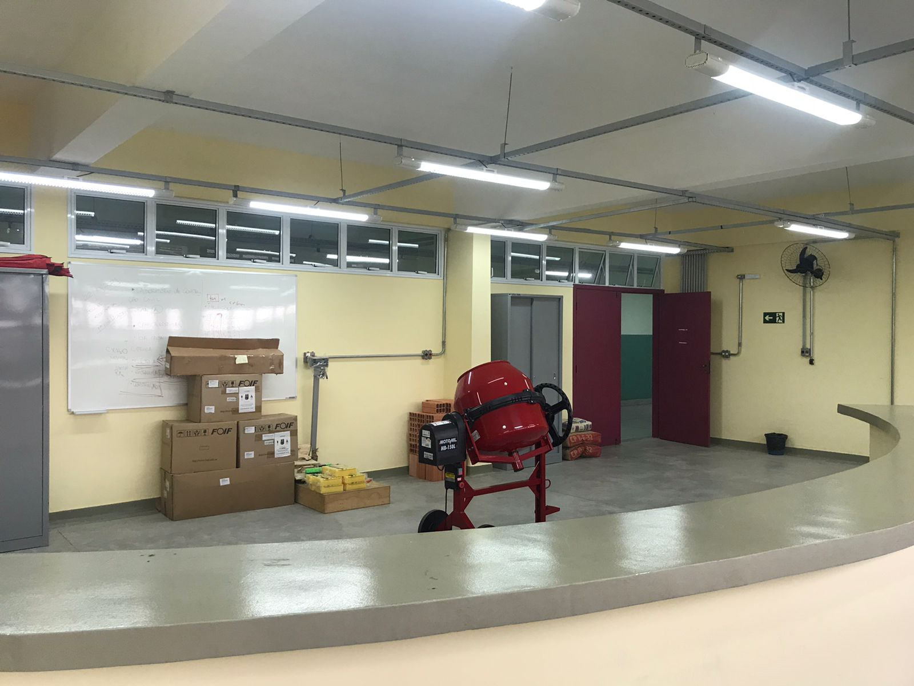
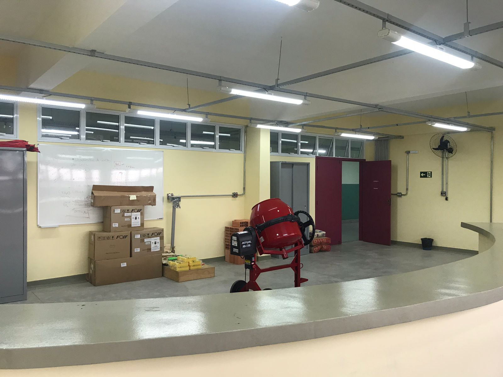

Nossa História
Em outubro de 2014 foi inaugurada a Etec Rio Grande da Serra localizada no município que nomeia esta nova unidade escolar. O espaço onde hoje a escola é sediada, funcionava o Centro Social Urbano, clube que ao longo do tempo deixou de cumprir sua funcionalidade social, dando oportunidade para que a Prefeitura do município realizasse uma parceria com o Governo do Estado de São Paulo, e mais especificamente com o Centro Paula Souza para o planejamento e implantação da unidade escolar.
 
